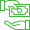

<ion-tabs>
  <ion-tab-bar slot="bottom">

    <ion-tab-button [routerLink]="['/products']">
      <ng-container *ngIf="selectedPath.includes('products'); else activeProduct">
        
      </ng-container>
      <ng-template #activeProduct>
        
      </ng-template>
    </ion-tab-button>

    <ion-tab-button [routerLink]="['/transactions']">
      <ng-container *ngIf="selectedPath.includes('transactions'); else activeTransactions">
        
      </ng-container>
      <ng-template #activeTransactions>
        
      </ng-template>
    </ion-tab-button>

    <ion-tab-button [routerLink]="['/offers']">
      <ng-container *ngIf="selectedPath.includes('offers'); else activeOffers">
        
      </ng-container>
      <ng-template #activeOffers>
        
      </ng-template>
    </ion-tab-button>

    <ion-tab-button [routerLink]="['/settings']">
      <ng-container *ngIf="selectedPath.includes('settings'); else activeSettings">
        
      </ng-container>
      <ng-template #activeSettings>
        
      </ng-template>
    </ion-tab-button>

  </ion-tab-bar>
</ion-tabs>